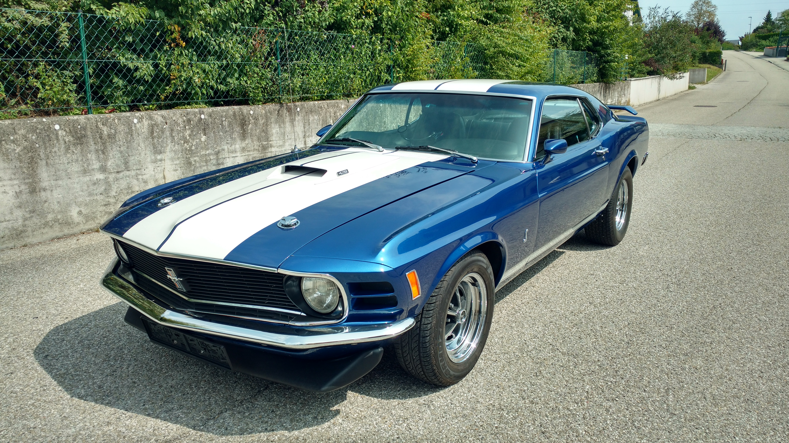

Chassis
1970 Mustang Fastback
The SportsRoof (Fastback) body style of the 1970 model year — the purest expression of the first-generation Mustang before the body grew heavier and more formal. Long hood, short deck, tapered roofline.
1970 Ford Mustang Fastback · 428 Cobra Jet
Acapulco Blue Metallic · Restomod · End-to-End

The Experience
Jacqueline wasn't built to sit still. She was built to be driven — on Sunday mornings when the roads are empty, on weekend trips where the destination matters less than the journey, and on every occasion when you'd rather be behind the wheel than anywhere else.
The goal was to create something that engages all of your senses simultaneously. The deep, unhurried rumble of seven liters of American V8 before the engine is fully warm. The way the Holley EFI finds its tune and settles into a loping idle. The smell of warm oil and hot metal. The weight of the Grant walnut wheel in your hands and the precise click of the TKO 600 through its five gears. The colour — Acapulco Blue Metallic, Shelby's own, reserved in 1970 for the most serious Mustangs.
Everything has been rebuilt with purpose. Every system upgraded to be modern and reliable without sacrificing the era-correct feel. Jacqueline looks and feels like 1970 at its absolute best — the version we imagine it could have been, with nothing left to fix and nowhere left to hide.
Year
1970
Body
Fastback
Engine
428 Cobra Jet
Displacement
7.0 L / 428 ci
Transmission
5-Speed Manual
Differential
3.50:1 LSD
Paint
Acapulco Blue M3077
Fuel System
Holley EFI
1970 Mustang Fastback
The SportsRoof (Fastback) body style of the 1970 model year — the purest expression of the first-generation Mustang before the body grew heavier and more formal. Long hood, short deck, tapered roofline.
Acapulco Blue Metallic


The car wears Ford America Shelby Acapulco Blue Metallic, paint code M3077. This colour was used from 1967 until 1970, primarily for Shelby variants — in 1970, exclusively by Shelby. It is not the car's original factory colour. See the full 1970 production colour list for context.
Over the paint run Shelby Le Mans Dual Stripes in white.
Mach 1 Fibreglass
A Mach 1 bolt-on fibreglass hood scoop with amber turn signals embedded in the sides and 428 emblems. Decorative — it does not funnel air into the engine bay.
Mach 1 Sport Racing
Boss 302


Boss 302 grille — no sport lights.
Grant Classic Nostalgia


A 15" Grant Classic Nostalgia wheel — walnut wood rim on three-spoke brushed stainless steel. The horn button is a Shelby Cobra Horn Button.
Standard, non-tilt
Flaming River FR1498


New Flaming River FR1498 manual steering box — 16:1 ratio, short shaft, 1–1/8" sector. Hooked up to the original steering linkage.
The original box was worn out with excessive play. This replacement transforms the steering feel entirely.
Front unknown + Scott Drake leaf springs


Upper control arms are Total Control Products TCP UCA-07 coil-spring units with a dropped pivot shaft (1" drop) for 1967–73 Mustangs — installed by the previous owner. Total Control Products Eccentric Eliminators replace the circular adjusters that are prone to walking under bump loads.
Dampers and springs are currently unidentified. Front wheel hub register diameter is 2.429" (61.7 mm).
Scott Drake C5ZZ-5560-HD 5-leaf heavy-duty springs. Dampers are Kona units — to be investigated further.
Standard, no tach

Original, GPS-driven, km/h


An original 1970 speedometer with red high-beam indicator and odometer. Mechanically driven by a Speedhut SpeedBox GPS Receiver — showing perfectly correct speeds without any connection to the transmission. Gauge face converted from mph to km/h.
AutoMeter RPM & Water Temp


Two AutoMeter 2" gauges occupy the centre dashboard slot where the A/C would typically live: an RPM tachometer and a water temperature gauge.
Full LED, Amber ambient


All interior lights completely converted to LED. Ambient lighting — dash and gauge backgrounds — is warm amber. Courtesy lights (door open, etc.) are bright white. Signal indicators remain true to original colours: turn signals green, high-beam indicator red. Exterior lights are still original.
Mach 1 Black
Mach 1 black upholstery with black stripe.
Retro Sound Hermosa 1970
Retro Sound USA Hermosa 1970 — a modern head unit in a period-correct form factor designed to drop into original dash cutouts without modification.
Hurst-style, 5-speed TKO 600
Hurst-style manual shifter for the 5-speed TKO 600. White shift ball.
1969 Deluxe
1969 Deluxe panels without chrome — butchered by a previous owner and in need of proper attention.
Refurbished, aluminium core


Fully refurbished non-A/C heater box. Fibre-glass housing with a new aluminium core.
Powermaster Street 150A


Powermaster Street 8-57141 — one-wire, 150A. Provides ample power for modern accessories including the EFI system and electric fans.
H4 fronts, European rear
5-wire H4 units with park light and separate low/high beam circuits.
Mustang Project MP-E6070-UB-DLX European-style tail lights with amber turn signals — a cleaner, more contemporary look that reads unambiguously in any market.
Custom, front passenger side

A custom relay box was added to isolate vital circuits from each other. Horns, headlights, ignition, and accessories now run on dedicated circuits. Mounted on the front passenger side, next to the radiator.
Ford FE 428 Cobra Jet


Ford FE V8 428 Cobra Jet, casting number 8A252186. Build date 1968-04-11, shift 8D11.
Vacuum at carburetor port at warm idle: 20.5 in/Hg. Oil pressure at warm idle (measured at oil filter): 60 psi.
C1AE-6090-A Cast Iron


Cast iron C1AE-6090-A heads, produced between 1961 and 1963. 8-bolt header attachment layout, compatible with the 428 CJ 16-bolt pattern.
D4TE-9425 Dual-Plane


D4TE-9425 1974 truck-purpose dual-plane intake manifold — an excellent street performer with good low-to-mid RPM torque characteristics. Engine produces 20.5 in/Hg vacuum at idle.
Ford Performance Cobra Le Mans

Ford Performance Cobra Le Mans polished aluminium valve covers — a period-correct visual signature for any serious FE engine build.
Melling M57HV

Melling M57HV high-volume pump, maintaining 60 psi at warm idle.
Unknown


Unknown
Hooker Competition Long-Tube

Hooker Competition long-tube uncoated steel headers. Currently showing surface rust and sitting lower than ideal — replacement is planned.
Custom Flowmaster
Custom-built from 2.25" separate pipes — no H-pipe, no X-pipe. Two Flowmaster mufflers of unknown specification. Exhaust tips are 1970 Mach 1 flat chrome.
Tuff Stuff 1421AC


Tuff Stuff 1421AC Platinum SuperCool aluminium pump (black casting). Hub height 7.578", pilot 5/8".
CVS Racing BBFE2WP-HF High Flow 2-groove aluminium pulley, 5.4" diameter. Driven by two Dayco Top Cog 15445 V-groove belts (44.50" × 0.440").
2× Mishimoto MMFAN-11HD Electric


Two Mishimoto MMFAN-11HD Race Line 5-blade 11" electric puller fans — 1700 CFM each, 11A draw each. Controlled by a Mishimoto MMFAN-PWM-UBK universal PWM controller. Temperature sensor is mounted on the radiator inlet side. Both fans are bolted to a Frostbite FB510 fan shroud.
Two SPAL 30102800 11" puller fans (1640 CFM each, 7-blade) controlled by a Delta Control FK-95 thermostat controller. After nearly three years the fans' 38A each draw melted the controller — which turned out not to be rated for the actual load.
A belt-driven 7-blade metal fan with no shroud, already wobbling on the water pump when acquired.
Frostbite FB150 Aluminium

Frostbite FB150 two-row aluminium downflow radiator — 22.00" wide × 20.63" high × 1.75" core thickness. Bolted to the front frame.
Scott Drake C9AE-8B273-4-E Concours Correct radiator hoses.
OER 60721 universal radiator overflow tank on the driver side.
Original-style black radiator, partially clogged, with a hose leading overflow to the floor instead of a catch tank.
Disc — type unknown
Disc brakes of unknown type and specification — to be identified.
Wilwood Dynapro 11"


Part of a Wilwood Forged Dynapro Low-Profile Rear Parking Brake Kit (140-11389-R).
Rear brake line connects via a stainless steel flex line from Brake Hoses Unlimited.
Wilwood DynaLite 11" Drum
Drum-in-hat parking brake included in the Wilwood Forged Dynapro kit. Actuated via the original under-dash parking brake lever.
Front cable: Scott Drake C9ZZ-2853-A factory replica.
Rear cable: Wilwood 330-9371 kit — hooks directly to the Wilwood e-brake drums with a cable equalizer and cable block. The block's centre thread was enlarged to 8mm inner diameter to accept the original front cable end.
Manual, Wilwood Master Cylinder
No power brakes — manual pedal actuation with a properly sized master cylinder that makes manual braking feel confident and linear.
Master cylinder: Wilwood 261-13272-BK Aluminium Tandem M/C kit, comprising:
Shelby Cobra Oval


Shelby Cobra Oval finned single-carb air cleaner (Scott Drake S1MS-9600-A) — period-correct visual statement sitting over the EFI throttle body.
Holley Super Sniper Stealth 650hp


Current: Holley Super Sniper Stealth 550-873 EFI — 650hp rating in a 4150 throttle-body form factor that preserves the classic carburetted appearance under the air cleaner.
The car ran a Holley Street Avenger 670 for several years. After an extensive rebuild in 2020 (new float needles, gaskets, accelerator pump, vacuum diaphragm, Moroso purple secondary spring, power valve increase from 6.5 to 10.5), and a 2021 update (main squirter from 32 to 52, accelerator pump timing), it ran well — but the EFI upgrade was the right next step for reliability and fuel precision.
Trick Flow TFS-27001


Trick Flow TFS-27001 return-style regulator, adjustable 3–60 psi (high-pressure spring, set to 60 psi). Four female 3/8" AN ports: fuel inlet, fuel return, regulator-to-throttle-body, fuel pressure gauge.
Redhorse Performance -06 AN

All fuel lines: Redhorse Performance 402 Series -06 AN black push-lock hose with 2000 Series push-lock ends. Filter: Redhorse 6" 10-micron cylindrical in-line race filter in -06 AN black.
Aeromotive Gen II Stealth 20gal


Aeromotive 18447 Gen II Stealth Tank — 20 US gallons (76 L), designed for 1969–70 Mustangs. Contains an Aeromotive Stealth 340 in-tank pump with a 73–10 Ω fuel level sender compatible with factory Ford gauges. Billet hat has ORB-06 outlet and return ports.
MSD 6AL Digital
MSD 6425 Digital 6AL, rev limiter set to 5,500 rpm.
MSD 8595 Pro-Billet Ready-to-Run

MSD Blaster 2 — 45kV

Unknown — replacement pending
Current plugs are seized and due for replacement with AutoLite units.
Powermaster XS Torque


Powermaster XS Torque clockable starter, replaced on 2021-09-05 when the original Autolite D0AF-11001-B coffee-can starter began slipping.
RAM 1518

RAM 1518 — steel, 184 tooth, 28 oz external balance.
RAM 88994 Organic


RAM 88994 — organic, 12" disc, diaphragm pressure plate, 1.125" 26-spline input. Clutch linkage is mechanical, original Z-bar style — worn and due for attention.
C5TA-7505-B Cast Iron


C5TA-7505-B cast iron — 6¾" deep (½" deeper than the factory Cobra Jet housing), rectangular opening on the driver side for manual clutch actuation. Originally a truck application. The opening required minor modification to clear a 12" clutch disc. The aftermarket equivalent would be a Quick Time RM-6056SFI.
Silver Sport Tremec TKO 600


Silver Sport Transmissions Perfect Fit Tremec TKO 600 5-speed manual. 26-spline input shaft. STX short-throw shifter.
The car came with a Ford 4-speed TopLoader. The TKO 600 swap adds a fifth gear and modern precision to the driving experience.
Dynotech 3" × 49.41"


Dynotech Engineering 3" × 49.41" driveshaft with 1350 slip yokes at both ends.
Moser Engineering 9" MusclePak


Moser Engineering 9" MusclePak — semi-gloss black heavy-duty housing (3" OD, 1/4" wall steel tubes).
After a full season of unravelling the consequences of a botched 2022 professional rebuild, the axle is finally in excellent condition. New Timken A20 bearings, seals, and retainer rings were pressed in with a 20t hydraulic press. New Wilwood discs, calipers, and pads installed. Calipers perfectly aligned. Parking brake adjusted to lock at 3 clicks on both sides. Axle was double-flushed and refilled to Eaton spec.
A professional shop made several critical and expensive errors during a rebuild: they installed inner housing seals that blocked differential oil from reaching the bearings (which in a Moser 9" design must be lubricated by the diff oil); they reassembled the outer retainer incorrectly, leaving ~3mm of axle play; they failed to centre the brake rotors; they cut into an axle shaft with a grinder; and they never adjusted the parking brake at all.
The car originally came with an unidentified Ford 8.8" rear end.
Magnum 500 Chrome 15×7.0


Magnum 500 Chrome 15×7.0 — front and rear. The Magnum 500 is an icon of the muscle car era and one of the definitive wheel choices for a 1970 Mustang.
The rear wheels show some lateral runout — possible causes include distorted mounting pad, weld distortion at the centre section, or elongated lug holes.
Cooper Cobra Radial G/T


Front: Cooper Cobra Radial G/T 235/60R15 98T RWL
Rear: Cooper Cobra Radial G/T 255/60R15 102T RWL
Raised white lettering — period-correct look with modern radial construction.